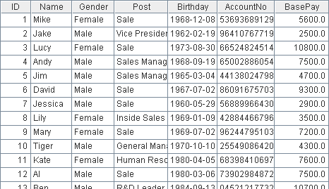
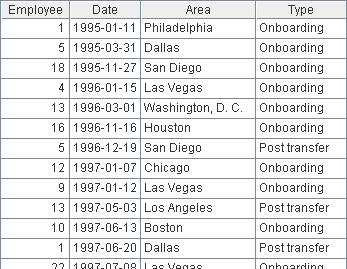
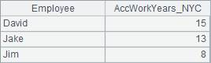

l Problem
The table below is an employee info list of a company.

Employees in the company transfer regularly due to business reasons. To record the transfer history, a table as below is created to record the work transfers of each employee ever since his on-boarding. (Those employees who had quitted the company are not included in the list)

The date and destination of each transfer are included in the table. Please find out employees who have worked in New York for over 5 years cumulatively.
l Tip
General steps: The key to this problem is to change the the transfer table recording data by employees transfer event to one that is arranged by working years. And then, you can compute the working years of in each area and perform the filtering easily.
1. Firstly, replace the Employee field with corresponding records in the employee info table. This step facilitates the problem solving greatly.
2. Group the transfer table by Employee to create a new table sequence. Reserve a field AccWorkDays_NYC to record the accumulated working years of employees in New York.
3. Loop every group, i.e., every employee.
4. Create a new table sequence according to the grouped transfer table. The new table include fields of StartDate, EndDate, and WorkArea. StartDate refers to the start time of a transfer. EndDate refers to the time of taking the next transfer. The EndDate in the last record is the current time. The WorkArea refers to the destination city of the current transfer record. In this way, a work history table arranged by time periods is created.
5. Select the working years in New York and work out the total days during the time. Write the result to the AccWorkDays_NYC field.
6. At the end of the loop, select those records whose AccWorkDays_NYC is not less than 5 years.
7. To facilitate viewing, a new table sequence can be built to only include the employee names and working years in New York.
l Code
|
|
A |
B |
|
|
1 |
=file("C:\\txt\\Employees.txt").import@t() |
|
Employee table |
|
2 |
=file("C:\\txt\\EmpTransfer.txt").import@t().sort(Date) |
|
Employee transfer table |
|
3 |
>A1.keys(ID), A2.switch(Employee,A1) |
|
Update the Employee field with corresponding record in the transfer table |
|
4 |
=A2.group(Employee;~:g,0: AccWorkDays_NYC) |
|
Group by employees and reserve a field of WorkYear |
|
5 |
for A4 |
=A5.g |
Loop every employee |
|
6 |
|
=B5.new(~.Date:StartDate, if(#==B5.len(),now(),B5(#+1).Date):EndDate, Area:WorkArea) |
Change the table to display by date. The last record uses the current date as End Date. |
|
7 |
|
=B6.select(WorkArea=="New York") |
Select the working years of employees who have ever worked in New York. |
|
8 |
|
>A5.AccWorkDays_NYC=B7.sum(interval(StartDate,EndDate)) |
Sum up total working days and write it to the reserved field. |
|
9 |
=A4.select(AccWorkDays_NYC>=5*365) |
|
Select employees who have worked in New York for over 5 years. |
|
10 |
=A9.new(Employee.Name:Employee, int(AccWorkDays_NYC/ 365):AccWorkYears_NYC) |
|
Change the format to make it more intuitive. |
l Result
